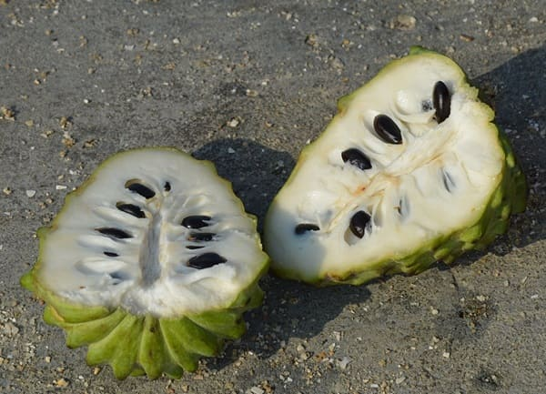

Fun fact about Chirimoya!
The skin of chirimoyas is said to resemble dragon scales, giving it a unique and intriguing appearance! But don't be fooled behind that textured skin lies the most creamy white pulp you could imagine. However, be careful as chirimoyas contain large, black seeds that are quite big and should be avoided when eating

-
List of ingredients
- ¾ cup sugar
- 4 egg yolks
- 1 cup chirimoya fruit pulp
- 1 cup heavy cream
- 1 cup evaporated milk
-
Pre-preparations and tips
-
Chirimoya pulp
- If you have the whole fruit rather than just the pulp, you can extract it yourself. Just be sure to remove all the seeds carefully.
-
-
Preparation
- In a bowl, beat sugar and egg yolks until light and voluminous, about 10 minutes by hand with a whisk or 5 minutes, using an electric mixer.
- In a small bowl, whisk together the chirimoya and the heavy cream.
- Heat evaporated milk in a saucepan over medium heat, but do not boil.
- Slowly add the heated milk to the egg mixture, stirring constantly. Be careful not to add the milk too quickly as the eggs could scramble.
- Add chirimoya and cream mixture and stir until thoroughly combined.
- Transfer the mixture to a freezer-safe container.
- Place the container in the freezer, stirring once every hour for the first four hours.
- Continue to freeze overnight.
-
Cultural Importance
It is a beloved traditional treat, especially during the warmer months when the fruit is in season. The ice cream is enjoyed by people of all ages and is often served in markets or small ice cream shops. Chirimoya, being one of the many fruits cultivated in Bolivia, reflects the country's deep connection to its natural resources and the creative ways in which Bolivians incorporate local fruits into their cuisine.